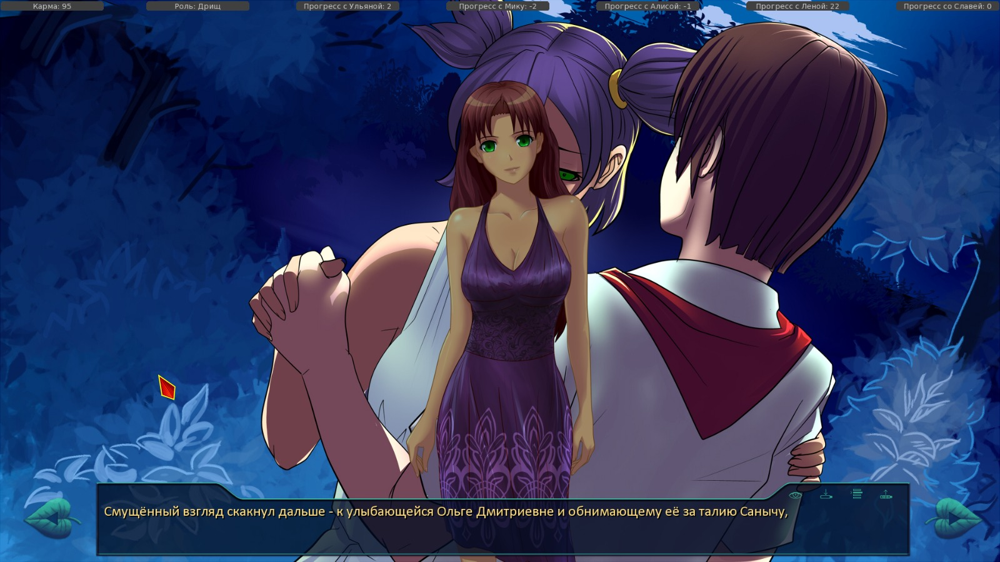
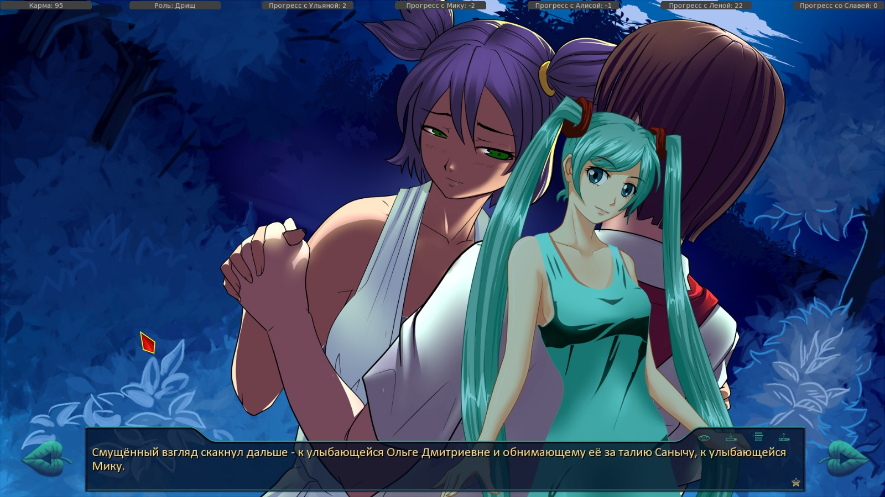
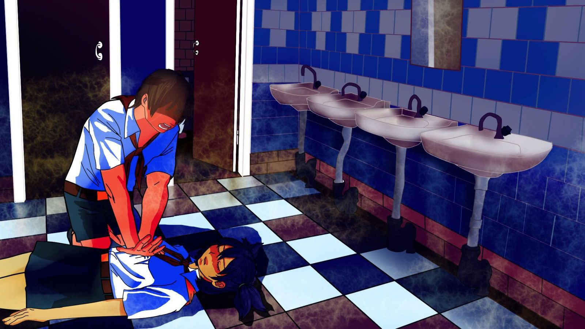
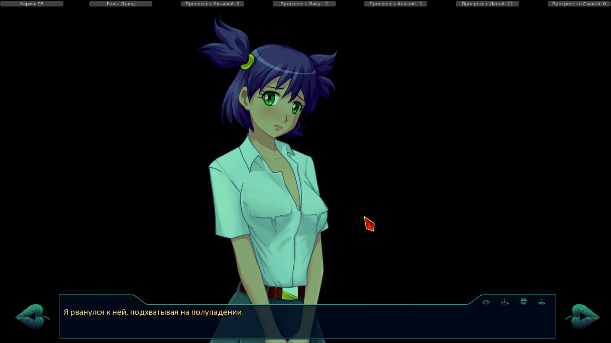
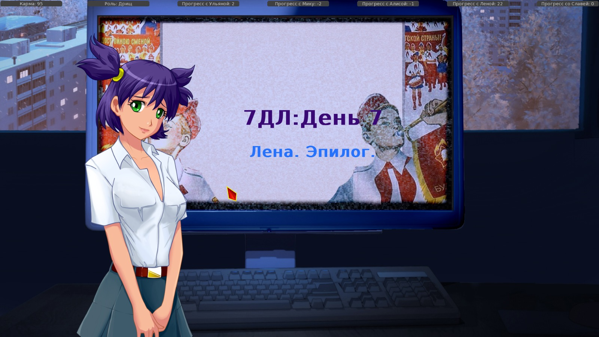

7 дней лета, билд 0.23d (Славя-классик, д.5)
Страница 8 из 11 •  1, 2, 3 ... 7, 8, 9, 10, 11
1, 2, 3 ... 7, 8, 9, 10, 11
Re: 7 дней лета, билд 0.23d (Славя-классик, д.5)
автор Dantiras в Пн 21 Сен 2015 - 0:06
- CRASH:
- I'm sorry, but an uncaught exception occurred.
While running game code:
File "game/scenario_alt/Scenario/Done/alt_route_common.rpy", line 14188, in script
File "game/scenario_alt/Scenario/Done/alt_route_common.rpy", line 14193, in python
NameError: name 'alt_day1_f1' is not defined
-- Full Traceback ------------------------------------------------------------
Full traceback:
File "C:\Users\Dantiras\Desktop\everlasting_summer-1.1\renpy\execution.py", line 288, in run
node.execute()
File "C:\Users\Dantiras\Desktop\everlasting_summer-1.1\renpy\ast.py", line 1486, in execute
if renpy.python.py_eval(condition):
File "C:\Users\Dantiras\Desktop\everlasting_summer-1.1\renpy\python.py", line 1338, in py_eval
return eval(py_compile(source, 'eval'), globals, locals)
File "game/scenario_alt/Scenario/Done/alt_route_common.rpy", line 14193, in <module>
elif alt_day1_f1 == 1:
NameError: name 'alt_day1_f1' is not defined
Windows-7-6.1.7601-SP1
Ren'Py 6.16.3.502
Everlasting Summer 1.0

Dantiras- Мизантроп

- Сообщения : 615
Дата регистрации : 2015-08-17
Re: 7 дней лета, билд 0.23d (Славя-классик, д.5)
автор Arlien в Пн 21 Сен 2015 - 0:11
Тут правда и другая сторона медали есть - я уже говорил, что первая половина четвертого сычедня со Славяивентами выглядит так, как мог бы выглядеть ее классик-рут?)
Arlien- Людовед

- Сообщения : 1322
Дата регистрации : 2014-09-08
Re: 7 дней лета, билд 0.23d (Славя-классик, д.5)
автор 7dl-kun в Пн 21 Сен 2015 - 0:15

7dl-kun- Находка для шпиона

- Сообщения : 3026
Дата регистрации : 2014-09-07
Откуда : здесь столько наркоманов?
Re: 7 дней лета, билд 0.23d (Славя-классик, д.5)
автор Dantiras в Пн 21 Сен 2015 - 0:16
Косяк кода
Строки 283-286
- Код:
menu:
"Только если под твою ответственность":
$ karma -= 10
$ lp_un =+ 1
Dantiras- Мизантроп
- Сообщения : 615
Дата регистрации : 2015-08-17
Re: 7 дней лета, билд 0.23d (Славя-классик, д.5)
автор Arlien в Пн 21 Сен 2015 - 0:17
Arlien- Людовед
- Сообщения : 1322
Дата регистрации : 2014-09-08
Re: 7 дней лета, билд 0.23d (Славя-классик, д.5)
автор 7dl-kun в Пн 21 Сен 2015 - 0:19
7dl-kun- Находка для шпиона
- Сообщения : 3026
Дата регистрации : 2014-09-07
Откуда : здесь столько наркоманов?
Re: 7 дней лета, билд 0.23d (Славя-классик, д.5)
автор Arlien в Пн 21 Сен 2015 - 0:36
Апд. На 4776 сл-кл-5 все еще нужен джамп на утро 6-ого дня.
Arlien- Людовед
- Сообщения : 1322
Дата регистрации : 2014-09-08
Re: 7 дней лета, билд 0.23d (Славя-классик, д.5)
автор Dantiras в Пн 21 Сен 2015 - 4:52
- CRASH:
- I'm sorry, but an uncaught exception occurred.
While running game code:
File "game/scenario_alt/Scenario/Done/alt_route_un_7dl.rpy", line 9632, in script
File "game/scenario_alt/Scenario/Done/alt_route_un_7dl.rpy", line 9632, in python
File "game/scenario_alt/Config/alt_res_script.rpy", line 208, in python
IOError: Couldn't find file 'scenario_alt/Pics/bg/ext_stand3_pr.jpg'.
-- Full Traceback ------------------------------------------------------------
Full traceback:
File "C:\Users\Dantiras\Desktop\everlasting_summer-1.1\renpy\execution.py", line 288, in run
node.execute()
File "C:\Users\Dantiras\Desktop\everlasting_summer-1.1\renpy\ast.py", line 720, in execute
renpy.python.py_exec_bytecode(self.code.bytecode, self.hide, store=self.store)
File "C:\Users\Dantiras\Desktop\everlasting_summer-1.1\renpy\python.py", line 1304, in py_exec_bytecode
exec bytecode in globals, locals
File "game/scenario_alt/Scenario/Done/alt_route_un_7dl.rpy", line 9632, in <module>
$ alt_chapter(7, u"Лена. Эпилог.")
File "game/scenario_alt/Config/alt_res_script.rpy", line 208, in alt_chapter
renpy.pause(1.0)
File "C:\Users\Dantiras\Desktop\everlasting_summer-1.1\renpy\exports.py", line 920, in pause
rv = renpy.ui.interact(mouse='pause', type='pause', roll_forward=roll_forward)
File "C:\Users\Dantiras\Desktop\everlasting_summer-1.1\renpy\ui.py", line 237, in interact
rv = renpy.game.interface.interact(roll_forward=roll_forward, **kwargs)
File "C:\Users\Dantiras\Desktop\everlasting_summer-1.1\renpy\display\core.py", line 1853, in interact
repeat, rv = self.interact_core(preloads=preloads, **kwargs)
File "C:\Users\Dantiras\Desktop\everlasting_summer-1.1\renpy\display\core.py", line 2168, in interact_core
self.draw_screen(root_widget, fullscreen_video, (not fullscreen_video) or video_frame_drawn)
File "C:\Users\Dantiras\Desktop\everlasting_summer-1.1\renpy\display\core.py", line 1418, in draw_screen
renpy.config.screen_height,
File "render.pyx", line 365, in renpy.display.render.render_screen (gen\renpy.display.render.c:4568)
File "render.pyx", line 166, in renpy.display.render.render (gen\renpy.display.render.c:2033)
File "C:\Users\Dantiras\Desktop\everlasting_summer-1.1\renpy\display\layout.py", line 521, in render
surf = render(child, width, height, cst, cat)
File "render.pyx", line 95, in renpy.display.render.render (gen\renpy.display.render.c:2291)
File "render.pyx", line 166, in renpy.display.render.render (gen\renpy.display.render.c:2033)
File "C:\Users\Dantiras\Desktop\everlasting_summer-1.1\renpy\display\layout.py", line 521, in render
surf = render(child, width, height, cst, cat)
File "render.pyx", line 95, in renpy.display.render.render (gen\renpy.display.render.c:2291)
File "render.pyx", line 166, in renpy.display.render.render (gen\renpy.display.render.c:2033)
File "C:\Users\Dantiras\Desktop\everlasting_summer-1.1\renpy\display\layout.py", line 521, in render
surf = render(child, width, height, cst, cat)
File "render.pyx", line 95, in renpy.display.render.render (gen\renpy.display.render.c:2291)
File "render.pyx", line 166, in renpy.display.render.render (gen\renpy.display.render.c:2033)
File "C:\Users\Dantiras\Desktop\everlasting_summer-1.1\renpy\display\image.py", line 164, in render
return wrap_render(self.target, width, height, st, at)
File "C:\Users\Dantiras\Desktop\everlasting_summer-1.1\renpy\display\image.py", line 54, in wrap_render
rend = render(child, w, h, st, at)
File "render.pyx", line 95, in renpy.display.render.render (gen\renpy.display.render.c:2291)
File "render.pyx", line 166, in renpy.display.render.render (gen\renpy.display.render.c:2033)
File "C:\Users\Dantiras\Desktop\everlasting_summer-1.1\renpy\display\im.py", line 463, in render
im = cache.get(self)
File "C:\Users\Dantiras\Desktop\everlasting_summer-1.1\renpy\display\im.py", line 196, in get
surf = image.load()
File "C:\Users\Dantiras\Desktop\everlasting_summer-1.1\renpy\display\im.py", line 1062, in load
surf = cache.get(self.image)
File "C:\Users\Dantiras\Desktop\everlasting_summer-1.1\renpy\display\im.py", line 196, in get
surf = image.load()
File "C:\Users\Dantiras\Desktop\everlasting_summer-1.1\renpy\display\im.py", line 507, in load
surf = renpy.display.pgrender.load_image(renpy.loader.load(self.filename), self.filename)
File "C:\Users\Dantiras\Desktop\everlasting_summer-1.1\renpy\loader.py", line 428, in load
raise IOError("Couldn't find file '%s'." % name)
IOError: Couldn't find file 'scenario_alt/Pics/bg/ext_stand3_pr.jpg'.
Windows-7-6.1.7601-SP1
Ren'Py 6.16.3.502
Everlasting Summer 1.0
Dantiras- Мизантроп
- Сообщения : 615
Дата регистрации : 2015-08-17
Re: 7 дней лета, билд 0.23d (Славя-классик, д.5)
автор 7dl-kun в Пн 21 Сен 2015 - 9:38
7dl-kun- Находка для шпиона
- Сообщения : 3026
Дата регистрации : 2014-09-07
Откуда : здесь столько наркоманов?
Re: 7 дней лета, билд 0.23d (Славя-классик, д.5)
автор Dantiras в Пн 21 Сен 2015 - 11:30
Правописание
2337 "Что ж, поделать, придётся." Лишняя запятая, потому что "что ж" здесь не вводная конструкция
2397 mi "Алиса обещала сбацать что-то совершенно невероятно, если я правильно поняла, это будет номер для соло-гитары с фонограммой, так что можете её рисовать сразу с «Уралом», не ошибётесь." При таком порядке слов уместнее "невероятное"
2425 "Впрочем, нас на пол-дороги ещё перехватил милый любому пионерскому уху сигнал горна." Приставка "пол" пишется слитно с корнями, начинающимися на все согласные (кроме л).
5101 un "Несколько секунд спустя послышались панические вопли «А-а-а-а, мои глаза!!!» и «Сделайте меня это развидеть, пожалуста!», кое у кого из глаз пошла кровь." пожалуйста
8164 "Сьязвил я." Разделительный Ъ
Логика
№1 alt_day6_un_7dl
Строка 7752
- Код:
th "Поэтому клубы отпадают - там мы впервые увиделись."
Возможное решение Поставить вместо этой строки логическую развилку на (alt_day1_sl_conv and alt_day1_random_val != 1), alt_day1_random_val = 1 и else.
№2 alt_day4_un_7dl_dinner
Строка 2399
- Код:
"Если я правильно помнил оригинального вокалоида, там юбочки были такие, что обвинения в аморалке были объяснимы."
№3 alt_day5_un_7dl_breakfast
Строка 3532-3539
- Код:
if alt_day1_sl_keys_took == 1 or alt_day2_sl_keys_kept:
me "Вообще-то, это секрет."
"Оглянувшись, я перешёл на шёпот."
me "Но у меня уже есть ключ, и если тебе вдруг…"
show un smile3 pioneer with dspr
un "И где только взял?"
me "Секрет фирмы!"
"Гордо ответил я."
- Код:
if alt_day2_sl_keys:
"Похлопав себя по карманам я, заговорщически огляделся и запер помещение."
me "Ничего не могу поделать с собой. {w}Я с очень большим пиететом отношусь к музыкальным инструментам."
me "И, боюсь, что не все здесь разделяют мои взгляды."
show un smile2 pioneer with dspr
un "Ты такой хозяйственный!"
"Похвалила она меня."
"И тут же угробила половину ощущения от комплимента, между делом поинтересовавшись."
un "А где ты ключи взял?"
me "Где взял, где взял… Где взял, там больше нет."
show un laugh pioneer with dspr
un "Ты их у Слави свистнул?"
me "Вообще, она их сама оставила, когда меня кормила в первый день, вот я их и прихватизировал."
un "Очень хозяйственный!"
№4 alt_day6_un_7dl_dance
Строка 9541
- Код:
un "Для меня очень важно, чтобы ты был счастлив - жить с тем забитым молодым человеком, который пялился на меня у ворот, наверное, такая тоска! Хорошо, что я ошиблась в оценке."
Возможное решение Поставить условие перед этой строкой alt_day1_random_val != 1 and not alt_day1_sl_conv. И ввести текст для оставшегося случая.
№5 alt_day5_un_7dl_supper
Строка 8715
- Код:
th "У другой проблемы со вспышками агрессии и полное отсутствие зоны комфорта."
Возможное решение Эту строку поставить под условие alt_day5_un_7dl_sl_un_washing (ибо в противном случае Славя вполне пристойно ведёт себя).
Прочие придирки
№6 Строки 4638-4640
- Код:
"Чмокнула меня в щёку Лена и убежала."
scene bg int_dining_hall_sunset with dissolve
play music music_list["everyday_theme"] fadein 5
№7 Строки 3195-3206
- Код:
me "Я не дуюсь. Просто…"
play music music_list["goodbye_home_shores"] fadein 3
window hide
$ persistent.sprite_time = "night"
scene bg ext_boathouse_night with dissolve2
with dissolve
play ambience ambience_boat_station_night fadein 3
with None
show un normal pioneer at center
with dissolve
window show
un "И снова ты, я, ночь и пристань."
Возможное решение Мне кажется, что стоит добавить хотя бы предложение о том, что они-де просидели просто так некоторое время, и как раз стемнело.
№8 Строка 8461, вернее предшествующие ей уговоры Мику посмотреть её выступление.
- Код:
"Любые поиски и ожидания дорогого человека делятся на несколько этапов, знакомые любому, кто хотя бы раз попадал в такую ситуацию."
№9 Строка 8712, а также предшествующие и последующие ей.
- Код:
"Я попытался отодвинуться, но дальше сидела уже Ольга Дмитриевна, и альтернативе сидеть у неё на шее было только терпение."
№10 Строки 3231-3251
- Код:
"Лена потянула меня за руку в сторону лагеря, а я беззвучно пообещал:"
me "Изо всех сил… Я буду помогать тебе изо всех сил."
stop ambience fadeout 4
stop music fadeout 4
window hide
label alt_day4_un_7dl_sleeptime:
stop music fadeout 5
"…"
"Ещё один день долой, центровой вехой в моём волшебном путешествии - но всего лишь стартовой в куда более захватывающем приключении, имя которому Лена."
stop ambience fadeout 2
"Возможно, это на несколько месяцев, возможно, на пару лет."
"Но чем чёрт не шутит - это может быть и на всю жизнь."
"И меня это не пугает. Так странно. От девочки, от которой я сам сбежал бы в прошлой жизни…"
play sound sfx_knock_door2
window hide
$ persistent.sprite_time = "night"
scene bg ext_house_of_mt_night
with dissolve
window show
"Нет ответа."
Возможное решение При начале сцены выключить спрайт и сменить БГ.
№11 Строки 9439-9461
- Код:
window show
"А когда открыл глаза - уткнулся взглядом в танцующую Двачевскую."
show dv smile dress far at fleft with dspr
"Это было бы само по себе достаточно удивительным, но шокирующим было то, что танцевал её ни кто иной, как Электроник!"
show el normal pioneer far at left behind dv
"Она перехватила мой взгляд и подмигнула."
hide dv
hide el
with dissolve
show cs grin at fright
"Подмигнула и Виола, пробирающаяся между пионерами."
hide cs with dissolve
show mt smile dress far at center with dspr
"Смущённый взгляд скакнул дальше - к улыбающейся Ольге Дмитриевне и обнимающему её за талию Санычу, "
hide mt with dissolve
show mi normal dress at right
extend "к улыбающейся Мику."
hide mi with dissolve
show sl smile dress far at fleft
"Славя, стоящяя за вертушками, кивнула и отвернулась."
hide sl with dissolve
"А я не мог отделаться от ощущения, что оказался в каком-то хэппи-энде, что вот-вот кадр прихлопнет кулисами, и поплывут по экрану титры."
"Мелодия закончилась, и мы вернулись обратно на нашу скамеечку."
- Скрины:


Dantiras- Мизантроп
- Сообщения : 615
Дата регистрации : 2015-08-17
Re: 7 дней лета, билд 0.23d (Славя-классик, д.5)
автор Surv в Пн 21 Сен 2015 - 22:07
4 день
1339 "Девочки синхронно кивнул."
1341 "Она снова качнули головами, косплея китайских болванчиков."
1633 "Интересно, кто-нибудь сейчас жив из эти деток?"
Surv- Хикка

- Сообщения : 114
Дата регистрации : 2015-06-06
Re: 7 дней лета, билд 0.23d (Славя-классик, д.5)
автор Kirikaru в Пн 21 Сен 2015 - 22:40
Все знакомые вышли на рут лены,где он встретил её взрослую в 2014,а у меня получился Семён-космонавт,Лена-художница и совок.
Kirikaru- Ньюфаг

- Сообщения : 8
Дата регистрации : 2015-09-21
Re: 7 дней лета, билд 0.23d (Славя-классик, д.5)
автор Arlien в Пн 21 Сен 2015 - 22:58
Arlien- Людовед
- Сообщения : 1322
Дата регистрации : 2014-09-08
Re: 7 дней лета, билд 0.23d (Славя-классик, д.5)
автор Kirikaru в Пн 21 Сен 2015 - 23:01
Kirikaru- Ньюфаг
- Сообщения : 8
Дата регистрации : 2015-09-21
Re: 7 дней лета, билд 0.23d (Славя-классик, д.5)
автор Kirikaru в Пн 21 Сен 2015 - 23:03
Kirikaru- Ньюфаг
- Сообщения : 8
Дата регистрации : 2015-09-21
Re: 7 дней лета, билд 0.23d (Славя-классик, д.5)
автор Arlien в Пн 21 Сен 2015 - 23:09
На вики есть прохождения, насчет валидности их, правда, не уверен - постоянно что-то меняется.
Arlien- Людовед
- Сообщения : 1322
Дата регистрации : 2014-09-08
Re: 7 дней лета, билд 0.23d (Славя-классик, д.5)
автор Kirikaru в Пн 21 Сен 2015 - 23:12
Kirikaru- Ньюфаг
- Сообщения : 8
Дата регистрации : 2015-09-21
Re: 7 дней лета, билд 0.23d (Славя-классик, д.5)
автор Kirikaru в Пн 21 Сен 2015 - 23:16
в картах нашел какой то параметр "сила" и "воля"
Kirikaru- Ньюфаг
- Сообщения : 8
Дата регистрации : 2015-09-21
Re: 7 дней лета, билд 0.23d (Славя-классик, д.5)
автор Arlien в Пн 21 Сен 2015 - 23:21
Выбор только в последних билдах дается, в старых - производится автоматом. Больше 75 - прыгаем, меньше - остаемся.карма была 95,но выбора никакого не было
Насчет силы и воли не парься. Первая стреляет пару раз в общих днях, второе - Славя-исклюзииив.
Arlien- Людовед
- Сообщения : 1322
Дата регистрации : 2014-09-08
Re: 7 дней лета, билд 0.23d (Славя-классик, д.5)
автор Kirikaru в Пн 21 Сен 2015 - 23:25
у меня стоит он,но,повторюсь,выбора никакого не было,а в конце бл крашнулся с ошибкой
Kirikaru- Ньюфаг
- Сообщения : 8
Дата регистрации : 2015-09-21
Re: 7 дней лета, билд 0.23d (Славя-классик, д.5)
автор Arlien в Пн 21 Сен 2015 - 23:28
Arlien- Людовед
- Сообщения : 1322
Дата регистрации : 2014-09-08
Re: 7 дней лета, билд 0.23d (Славя-классик, д.5)
автор 7dl-kun в Пн 21 Сен 2015 - 23:38
Опачки. С этого места подробнее, пожалуйста.Arlien пишет:и о краше в Леноэпилоге
7dl-kun- Находка для шпиона
- Сообщения : 3026
Дата регистрации : 2014-09-07
Откуда : здесь столько наркоманов?
Re: 7 дней лета, билд 0.23d (Славя-классик, д.5)
автор Arlien в Пн 21 Сен 2015 - 23:45
Arlien- Людовед
- Сообщения : 1322
Дата регистрации : 2014-09-08
Re: 7 дней лета, билд 0.23d (Славя-классик, д.5)
автор Dantiras в Вт 22 Сен 2015 - 3:40
Репортовал - мне ответили, что нужно изменить, и оно починилось. Вроде всё тот же файл из последней версии, но шайтан-ренпай его почему-то больше возлюбил и прекратил выкидывать.Arlien пишет:Дык на предыдущей странице. Дант рапортовал.
Теперь о деле. Вновь по alt_route_un_7dl.
Внимательно сегодня призадумался над ЦГ d7_un_reanimation. Сейчас в этом рисунке заключена ошибка. Поскольку теперь в финальном дне Лена-рута она предстаёт пред нами без пионерского галстука, наличие его (галстука) на указанной ЦГ неуместно.
- d7_un_reanimation:

- Текущий спрайт Лены д.№7:


Dantiras- Мизантроп
- Сообщения : 615
Дата регистрации : 2015-08-17
Re: 7 дней лета, билд 0.23d (Славя-классик, д.5)
автор Arlien в Вт 22 Сен 2015 - 3:56
сл-кл, 4266 - цс, не сл. И "особЕнного"
4323 - "30%"
Arlien- Людовед
- Сообщения : 1322
Дата регистрации : 2014-09-08
Страница 8 из 11 • 1, 2, 3 ... 7, 8, 9, 10, 11